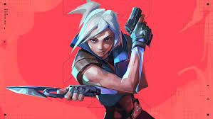

발로란트
라이엇 게임즈에서 개발한 1인칭 슈팅 게임. 국내에선 게임 명칭의 앞 두 글자를 따 발로, 영어권에서는 VLRT 또는 VAL이라는 약칭으로도 불린다.
라이엇 게임즈가 서비스하고 있는 게임 중 LoL 유니버스에 포함되지 않는 유일한 게임이기도 하다.

밀리터리 FPS의 감각을 유지하면서도 스킬 시스템을 도입한 덕분에 헤비하고 택티컬한 FPS치고 진입 장벽이 상대적으로 낮으며, 남녀노소 무관하게 큰 인기를 끌고 있다. 또한 전략적이고 광범위한 국제 리그와 세계 대회를 개최하여, 출범 2년 만에 150만명의 뷰어십을 뽑아내 차세대 e스포츠로 인기 몰이를 하고 있는 대세 게임 중 하나이다.